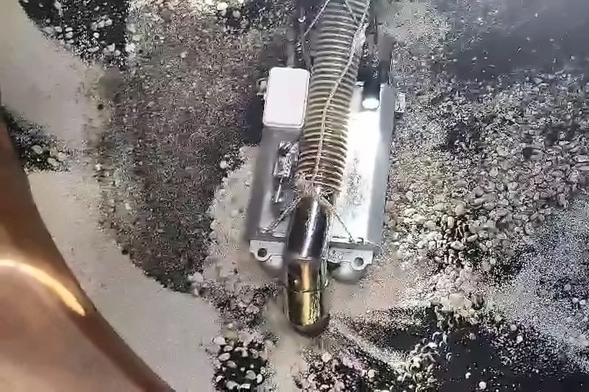

무인 솔루션위험한 설비 안에는
로봇이 먼저 들어갑니다
로봇은 설비 안에서 위험 물질을 회수하고, 작업자는 설비 밖 제어 차량에서 CCTV 화면을 보며 조종합니다. 위험 물질이 줄어든 뒤에야 작업자가 들어가 마무리합니다.
“사람이 없는 곳에 인명 사고도 없다.”


로봇 라인업 5로봇을 고르면 아래에서 바로 볼 수 있습니다

흡입 로봇
- 로봇이 하는 일
- 탱크 · Pond 바닥의 위험 물질을 빨아들입니다
- 작업자가 하는 일
- 제어 차량에서 CCTV를 보며 원격 조종
들어가는 곳탱크Pond준설
- 방식
- 흡입형
- 적용 대상
- Pond · Tank(관로)
- 구동
- 유압
- 수중 작업
- 가능
- 보유
- 무인준설로봇 흡입형 1대
출처: 회사소개서(2024) · 기술소개서(2025) 장비 소개

파쇄형 로봇
- 로봇이 하는 일
- 굳은 슬러지 · 충진물을 부숴서 회수합니다
- 작업자가 하는 일
- 원격 조종 · 방폭 카메라로 감시
들어가는 곳반응기탱크Pond준설
- 방식
- 파쇄형 (2·3세대는 파쇄 흡입형)
- 적용 대상
- Pond · Reactor · Tank
- 구동
- 유압
- 수중 작업
- 가능
- 본체 · 바퀴 · 세척
- 알루미늄 본체 · 스크류형/체인형 바퀴 · 앞쪽 물분사 노즐
출처: 회사소개서(2024) · 기술소개서(2025) 장비 소개

무인 로더
- 로봇이 하는 일
- Pond · 배수로 바닥에 쌓인 것을 치웁니다
- 작업자가 하는 일
- 원격 조종
들어가는 곳Pond · 배수로좁은 공간 · 실외준설
- 대상
- 흙 · 슬러지
- 구동
- 전기 · 유압
- 수중 작업
- 불가
- 장점 · 단점
- 교대로 쉬지 않고 작업 · 작업자 안전 / 배터리 교체·충전 시간이 필요
- 보유
- 무인로더 1대 · 무인궤도로더 1대
출처: 회사소개서(2024) · 기술소개서(2025) 장비 소개

무인 Jet Cleaner
- 로봇이 하는 일
- 좁은 공간을 고압수로 씻어 냅니다
- 작업자가 하는 일
- 원격 조종
들어가는 곳좁은 공간
- 대상
- 설비 고압 세척 (노즐 8개 이상)
- 구동
- 전기
- 수중 작업
- 구동부 가능
- 장점
- 쉬지 않고 작업 · 좁은 곳을 사람 없이
- 단점
- 안이 복잡하면 일부만 씻김 · 물이 튀어 안 보이면 CCTV로 확인
출처: 회사소개서(2024) · 기술소개서(2025) 장비 소개

관로 CCTV 로봇
- 로봇이 하는 일
- 하수관 안을 카메라로 조사합니다
- 함께 쓰는 장비
- CCTV 조사차량 2대 (관경 250~600mm)
들어가는 곳관로
- 용도
- 관로 조사
- 보유
- 관로 CCTV 로봇 1대
- 함께 쓰는 장비
- 냄새 제거 장치(탈취제거 SYSTEM) 1세트
출처: 회사소개서(2024) · 기술소개서(2025) 장비 소개
한눈에 비교
로봇마다 들어가는 곳과 하는 일이 다릅니다
로봇 이름을 누르면 그 로봇 설명으로 갑니다. 점은 그 설비에 들어가는 로봇입니다.
| 로봇 | 로봇이 하는 일 | 탱크 | 반응기 | Pond · 배수로 | 관로 | 좁은 공간 | 준설 | 수중 작업 | 구동 |
|---|---|---|---|---|---|---|---|---|---|
| 01흡입흡입 로봇 | 탱크 · Pond 바닥의 위험 물질을 빨아들입니다 | · | · | · | 가능 | 유압 | |||
| 02파쇄파쇄형 로봇 | 굳은 슬러지 · 충진물을 부숴서 회수합니다 | · | · | 가능 | 유압 | ||||
| 03퇴적물 처리무인 로더 | Pond · 배수로 바닥에 쌓인 것을 치웁니다 | · | · | · | 불가 | 전기 · 유압 | |||
| 04고압 세척무인 Jet Cleaner | 좁은 공간을 고압수로 씻어 냅니다 | · | · | · | · | · | 구동부 가능 | 전기 | |
| 05관로 조사관로 CCTV 로봇 | 하수관 안을 카메라로 조사합니다 | · | · | · | · | · | — | — |
출처: 회사소개서(2024) · 기술소개서(2025) 장비 소개 · ‘—’는 두 문서에 적혀 있지 않은 칸
작업 절차
로봇은 안에서, 사람은 밖에서
로봇은 설비 안에서 일하고, 작업자는 밖에서 CCTV 화면을 보며 로봇을 원격으로 조종합니다. 위험 물질이 줄어든 뒤에야 작업자가 들어가 남은 것을 마무리합니다.
- 01System 설치
현장 적용 가능성 검토 · 사전 Test 실시
- 021차 Washing
설비 밖Vacuum Car(흡입차)를 이용해 외부에서 잔여 물질 제거
- 03내부 Cleaning
설비 안 · 로봇Robot 투입 · Shell side 내부 잔여 위험 물질 1차 회수
설비 밖제어 차량에서 CCTV 화면으로 내부를 보며 원격 조정
- 042차 Washing
설비 안 · 로봇Robot 전면부 Jet Nozzle을 이용한 내부 Cleaning · 위험 물질 최소화
설비 밖제어 차량에서 원격 조정
- 05Final Cleaning
설비 안 · 작업자작업자 투입 · 내부 최종 잔여물 제거
- 06폐기물 처리
폐기물량 감소 · 처리 기간 단축
출처: 기술소개서(2025) 19쪽 Robot-Tank Cleaning System(단계 이름 · 내용) · 18·20쪽 공사개략도(제어 차량 원격 조정) · 장소가 적힌 단계만 ‘설비 안 / 설비 밖’으로 나눔
고용노동부 2014~2023 산업재해조사 · 신정개발 연간 작업 기준 — 기술소개서(2025) '무인 로봇 시스템 개발 배경'. 개발 목적: 작업자 투입 전 유해물질 사전 제거를 통한 위험성 감소, 연속 가동 중 작업 효율 유지.
로봇이 모든 걸
해결하지는 않습니다
그래서 로봇을 넣기 전에 현장을 먼저 보고 시험해 봅니다. 아래는 기술소개서(2025)에 실린 PFO Tank 작업의 고려사항입니다.
- 확인 1로봇이 안에서 잘 움직일 수 있는가
바닥에 쌓인 것의 상태에 따라 로봇이 움직이기 어려울 수 있고, 호스가 탱크 안 가열 코일에 걸릴 수 있습니다. 코일 배치를 먼저 봅니다.
- 확인 2호스가 열을 견디는가
흡입 호스는 55℃까지 견딥니다. 더 뜨거운 곳은 고온용 호스를 쓰는데, 덜 휘어서 작업에 걸릴 수 있습니다.
- 확인 3굳은 슬러지를 부술 수 있는가
슬러지 상태를 보고 파쇄 작업이 가능한지 확인합니다.
이럴 때는 작업 방법을 다시 검토합니다
- 탱크 안 가열 코일이 고르게 배치되어 있을 때
- 슬러지가 너무 굳거나 끈적해서 빨아들여지지 않을 때
- 액체가 로봇 바퀴보다 높이 남아 있을 때 — 움직이기 어려워 먼저 줄입니다
로봇으로 모든 문제를 해결할 수는 없습니다. 가장 위험한 원인을 먼저 없애는 데 씁니다.
기술소개서(2025) 적용 시 고려사항의 내용을 쉬운 말로 옮겼습니다. 원문은 기술소개서 PDF에서 볼 수 있습니다.
밀폐공간 작업 위험성 비교 — 인원 투입 vs 로봇 투입
| 주요 위험성 (인원 투입) | 로봇 투입 |
|---|---|
| 유독가스에 의한 질식 | 위험물질 사전 제거 |
| 고위험 물질 접촉 | 위험물질 사전 제거 |
| 공기 공급 중단에 의한 질식 | 작업자 안전 확보 |
| 줄 걸림에 의한 넘어짐 | 내부 작업시간 최소화 |
| 협소 공간에 따른 근골격 부상 | 협소공간 대체 투입 |
효율성 비교
| 로봇 투입 작업 | 효과 |
|---|---|
| 일반 작업 허가서로 진행 | 준비시간 감소 |
| 1시간 이상 연속 작업 | 유효 작업시간 확보 |
| Jet · 흡입 동시 작업 | 작업 효율 증가 |
| CCTV 내부 감시 | 실시간 내부 확인 |
| 위험구역(방폭·가스) 긴급 작업 | 위험지역 내 즉시 투입 |
분야별 적용 예시(좋아지는 점 · 유의할 점 · 적용 범위): 설비 클리닝 · 촉매·충진물 작업 · 준설·슬러지 회수
출처: 기술소개서(2025) 29~30쪽 적용 시 고려사항(PFO Tank 작업) · 23~24쪽 위험성·효율성 비교
연구개발 · 특허
2017년 11월 기업부설연구소를 세웠습니다. 로봇과 준설 관련 특허를 등록했고, 로봇 시제품을 만들어 성능시험을 했습니다. 시제품은 위의 현장 장비와 따로 적었습니다.
- 1세대흡입형Pond, Tank(관로) · 수중 작업 가능 · 유압 구동
- 2세대파쇄 흡입형Pond, Open Ditch · 수중 작업 불가 · 전기, 유압 구동
- 3세대파쇄 흡입형Pond, Tank · 수중 작업 가능 · 유압 구동
- 4세대흡입형 · 소형화Pond, Tank · 수중 작업 가능 · 유압 구동
- 5세대파쇄형 · 소형화Pond, Reactor · 수중 작업 가능 · 유압 구동
흡입 로봇 1~5세대 — 출처: 기술소개서(2025) 장비 보유 현황
등록 특허
| 특허 명칭 | 등록 |
|---|---|
| 정합식 맨홀 | 2017 |
| 관내부 무인 준설 처리 시스템 | 2017 |
| 스크류 바퀴를 구비한 수륙양용 준설로봇 | 2020 |
| 소형관로 준설로봇 및 그 운전방법 | 2020 |
| 워터젯 유닛을 구비한 세정로봇 장치 | 2020 |
회사소개서에는 특허증 8장과 출원사실증명 4장이 실려 있음
로봇 시제품
벽면/천장 부착형은 KCL 성능시험(입회시험)을 거쳤습니다.
| 로봇 | 크기 · 무게 | 구동 · 조종 |
|---|---|---|
| 벽면/천장 부착형 (Wall/Ceiling Mobile Robot) | 480×660×325mm · 59.5kg | 유압 140bar 캐터필러 · 조이스틱/카메라 자율 제어 |
| 흡입/준설 (Screw Mobile Robot) | 490×730×260mm · 61.2kg | 유압 최대 140bar 스크류 · 조이스틱/카메라 자율 제어 |
| 흡입/준설 (Grinding Mobile Robot) | 490×1,010×260mm · 81kg | 유압 최대 140bar 스크류 · 조이스틱/카메라 자율 제어 |
| 파쇄 (Splinter Robot, Caterpillar) | 415×1,140×400mm · 79.2kg | 유압 최대 140bar 캐터필러 · 조이스틱 |
| 파쇄 (Splinter Robot, Screw) | 490×1,010×260mm · 87.5kg | 유압 최대 140bar 스크류 · 조이스틱 |
연구개발 과제 3건
- 능동형 촉매 적재장치 — 촉매 반응탑 내 고체 촉매의 고밀도 적층 · 공압
- 석유화학 저장탱크 협업형 클리닝 시스템 — 고위험물 저장탱크 내부 세정 · 유압
- 수중 슬러지 수거 무인 자율 이동 로봇 시스템 — 하수도 슬러지 제거 · 유압
출처: 기술소개서(2025) 연구개발 (PROCESS.projects 과제 · 활용 · 구동)
출처: (주)신정개발 회사소개서(2024) · 기술소개서(2025)
로봇 적용은 현장 적용 가능성 검토와 사전 Test로 시작합니다
기술소개서 작업 절차의 첫 단계입니다. 대상 설비와 작업을 알려 주시면 검토부터 안내합니다.